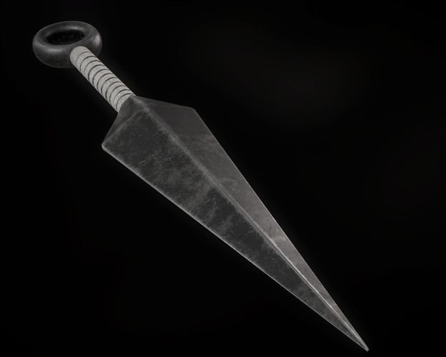
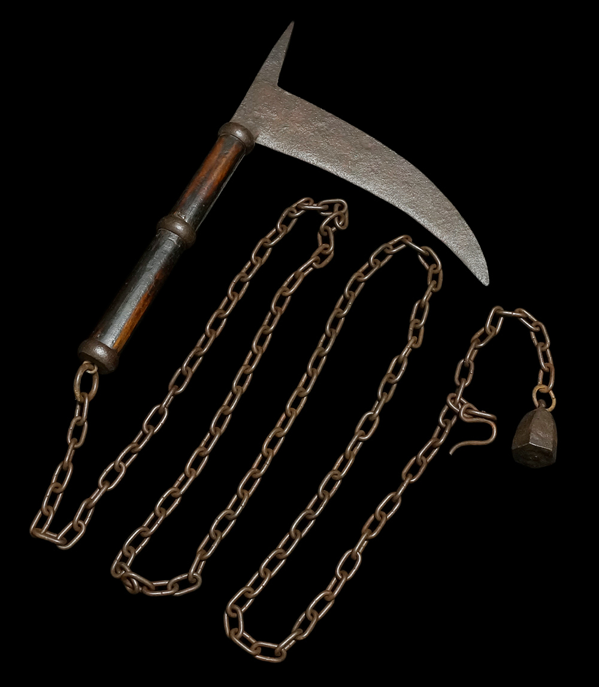
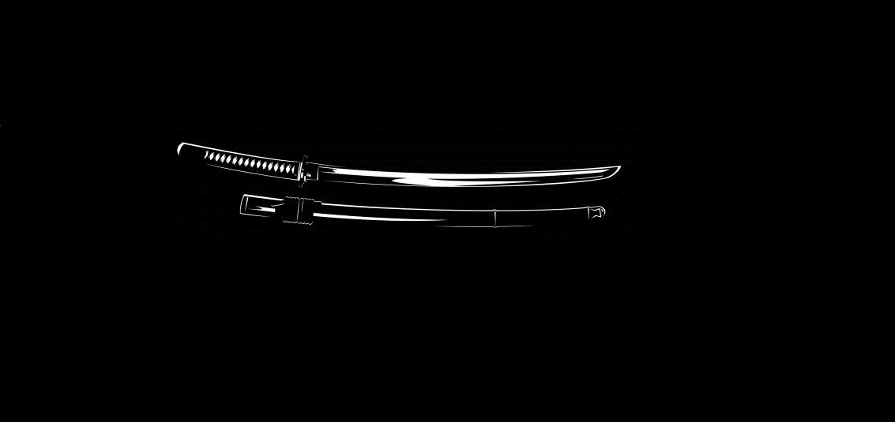

Armas Japonesas
Kunai
A Kunai é uma arma ninja que consiste numa lâmina de ferro com ou sem furo na base, usada para amarrar cordas. Originária da era Tensho no Japão, era utilizada tanto para arremesso quanto como ferramenta, podendo servir para escalada, armadilhas, escavações e combate.
Kusarigama
A Kusarigama é composta por uma foice (kama) presa a uma corrente longa com peso de aço na ponta. Diferente das foices agrícolas, a Kusarigama era usada exclusivamente como arma, praticada na arte do Kusarigamajutsu. Sua versatilidade permitia ataques de curta e longa distância.
Katana
A Katana é a espada mais emblemática do Japão, surgida no século XIII para enfrentar invasões mongóis. Conhecida por sua lâmina curva e afiada, foi aperfeiçoada ao longo dos séculos, ora com foco em estética refinada, ora em resistência e durabilidade para os períodos de guerra civil. É considerada a alma do samurai.
